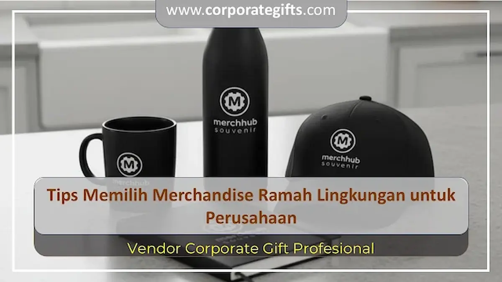

Corporate Gifts ID - Merchandise ramah lingkungan adalah cinderamata perusahaan yang dibuat dari material berkelanjutan seperti serat bambu, stainless steel bermutu tinggi, atau bahan daur ulang tersertifikasi. Produk ini kini menjadi pilihan utama kalangan korporat modern karena terbukti efektif menciptakan persepsi merek yang peduli lingkungan sekaligus mempertahankan sentuhan kemewahan eksklusif.
Pergeseran paradigma bisnis saat ini menuntut institusi untuk tidak lagi sekadar mengejar tampilan visual yang glamor, melainkan juga membuktikan tanggung jawab sosial dan kepedulian terhadap bumi. Pengadaan cinderamata ramah lingkungan sejalan dengan meningkatnya kebutuhan pasar akan merchandise premium untuk membangun loyalitas klien yang beretika dan berwawasan jangka panjang.
Mengapa Merchandise Ramah Lingkungan Menjadi Prioritas Korporat?
Merchandise eco-friendly bertindak sebagai instrumen komunikasi strategis yang memberikan nilai tambah nyata bagi reputasi korporat. Melalui pemilihan produk berbahan ramah lingkungan, manajemen dapat mengomunikasikan komitmen terhadap target ESG (Environmental, Social, and Governance) secara konkret kepada pemangku kepentingan.
Di samping aspek keberlanjutan, barang ramah lingkungan sangat mendukung gaya hidup perkotaan masa kini. Sebagai contoh, penggunaan souvenir tumbler stainless steel mampu menekan pemakaian botol plastik sekali pakai secara drastis, sedangkan totebag berbahan kanvas organik dapat digunakan berulang kali dalam mobilitas harian. Dengan demikian, logo perusahaan Anda akan senantiasa hadir dan terlihat dalam rutinitas penerima.

Kombinasi merchandise ramah lingkungan yang fungsional: tumbler insulasi, pulpen kayu, dan notebook kraft daur ulang.
5 Tips Memilih Merchandise Ramah Lingkungan untuk Perusahaan
Agar anggaran pengadaan suvenir menghasilkan impak yang optimal, panitia pengadaan perlu mempertimbangkan lima langkah krusial berikut:
1. Pilih Bahan yang Benar-Benar Berkelanjutan
Pastikan produk diproduksi dari material yang dapat diperbarui secara cepat (seperti bambu), dapat didaur ulang tanpa menurunkan kualitas (seperti baja nirkarat 304 food-grade), atau berasal dari serat daur ulang (recycled PET/katun daur ulang). Hindari produk yang hanya sekadar berlabel hijau di permukaan namun intinya tetap menggunakan plastik murni sulit terurai.
2. Utamakan Fungsionalitas dan Durabilitas Jangka Panjang
Pilihlah barang yang memiliki nilai guna harian tinggi dan dirancang kokoh untuk digunakan selama bertahun-tahun. Suvenir yang cepat rusak justru akan menjadi sampah baru yang bertentangan dengan prinsip ramah lingkungan. Perlengkapan seperti alat minum insulated, alat tulis isi ulang, dan wadah kerja serbaguna terbukti memiliki tingkat retensi pemakaian tertinggi.
3. Pertahankan Estetika Desain yang Elegan dan Premium
Konsep ramah lingkungan bukan berarti produk berpenampilan kusam atau amatir. Dengan sentuhan desain modern, perpaduan tekstur kayu alami dengan logam gelap mampu menghadirkan kesan mewah nan berkelas. Teknik cetak logo seperti laser engraving atau hot deboss sangat disarankan karena tidak menggunakan tinta kimia berlebih dan menghasilkan ukiran yang abadi.
4. Seleksi Vendor Pengadaan yang Berpengalaman dan Transparan
Bekerjasamalah dengan mitra vendor tepercaya yang memiliki rantai pasok material terverifikasi. Vendor yang kompeten seperti CorporateGifts.ID siap memberikan transparansi spesifikasi bahan baku, konsultasi anggaran, serta penyusunan mockup digital gratis untuk memastikan hasil akhir sesuai dengan identitas korporat.
5. Perhatikan Kemasan Berkonsep Eco-Friendly Packaging
Pengalaman menerima cinderamata berawal dari kemasan luarnya. Hindari kotak berlaminasi plastik murni atau pembungkus gelembung sekali pakai. Manfaatkan kemasan boks karton kraft daur ulang, selongsong berpita tali rami, atau tas serut berbahan blacu organik yang serasi dengan nuansa ramah lingkungan produk di dalamnya.
Tabel Pilihan Material Eco-Friendly dan Karakteristiknya
Berikut adalah perbandingan material ramah lingkungan yang paling populer untuk kurasi suvenir korporat:
| Kategori Material | Contoh Produk Merchandise | Kelebihan Utama | Kesesuaian Target Audiens |
|---|---|---|---|
| Serat Bambu Alami | Tumbler cover bambu, pulpen bambu, sikat gigi travel | Tumbuh cepat, biodegradable, memiliki tekstur serat natural yang mewah | Karyawan milenial, event gathering outdoor, aktivis komunitas |
| Stainless Steel SUS 304 | Vacuum tumbler, botol sport, sedotan lipat steril | Tahan pakai seumur hidup, bebas karat, menjaga suhu minuman berjam-jam | Klien VIP, jajaran direksi, peserta seminar eksekutif |
| Katun Organik & Kanvas | Totebag kanvas tebal, pouch serbaguna | Menggantikan ribuan kantong kresek, kuat, mudah dicuci dan disablon rapi | Paket goodie bag workshop, peserta pameran bisnis |
| Kertas Daur Ulang & Jerami | Buku agenda kraft, blocknote spiral jerami gandum | Jejak karbon sangat rendah, mendaur ulang limbah agrikultur | Pelatihan internal kantor, simposium akademik |
Keuntungan Strategis Penggunaan Merchandise Berkelanjutan bagi Bisnis
Mengintegrasikan cinderamata ramah lingkungan ke dalam operasional perusahaan mendatangkan beragam dampak positif bagi pertumbuhan brand:
- Memperkuat Posisi Brand di Mata Publik: Menegaskan bahwa institusi Anda bukan hanya berorientasi pada profit, tetapi juga mengedepankan kelestarian sosial dan lingkungan.
- Meningkatkan Nilai Apresiasi Emosional: Penerima suvenir merasa jauh lebih dihargai karena memperoleh barang yang bermakna, berkualitas, dan aman bagi kesehatan.
- Mendukung Program CSR dan Pelaporan ESG: Pengadaan suvenir hijau dapat dicatatkan sebagai kontribusi nyata institusi dalam mengampanyekan pengurangan sampah plastik.
- Fleksibel untuk Berbagai Acara Korporat: Sangat adaptif untuk dibagikan pada agenda gathering tahunan, bingkisan apresiasi nasabah prioritas, hingga suvenir pelantikan pimpinan.
FAQ Seputar Merchandise Ramah Lingkungan Perusahaan
Kesimpulan
Merchandise ramah lingkungan bukan sekadar tren sementara, melainkan perwujudan visi strategis bagi perusahaan yang ingin membangun reputasi masa depan yang bertanggung jawab dan kredibel. Dengan memadukan material berkualitas, fungsi harian, dan personalisasi logo profesional, cinderamata ini menjadi investasi bernilai tinggi bagi relasi bisnis Anda.
Siap menghadirkan merchandise ramah lingkungan berkelas untuk institusi Anda? Jelajahi koleksi merchandise perusahaan dan e-katalog resmi kami di Corporate Gifts ID, atau hubungi konsultan kami untuk merancang paket kustom terbaik.